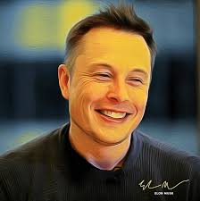

Elon@spaceX
Elon Musk
Elon Musk is a South African-born American entrepreneur and businessman who founded X.com in 1999(which later became PayPal), SpaceX in 2002 and Tesla Motors in 2003. Musk became a multimillionaire in his late 20s when he sold his start-up company, Zip2, to a division of Compaq Computers. He has an estimated net-worth of around 59.2 billion dollars and is listed as the 16th richest person in the world according to Forbes. His ultimate goal is to make life multiplanentary and help humanity explore beyound Earth.